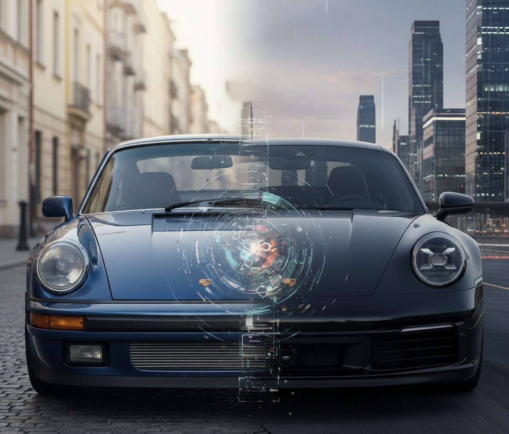

The 911 Doctrine
In 1963, Porsche introduced the 911. Rear-engine, air-cooled, unmistakable silhouette. Every automotive journalist said it was flawed: the weight distribution was wrong, the handling was tricky, and the engine was in the wrong place. Porsche heard all of it and then spent the next sixty years proving everyone wrong, not by starting over but by never stopping.
Year after year, generation after generation, Porsche refined. They didn't chase trends or scrap the platform every time a competitor launched something flashy. They studied what worked, fixed what didn't, listened to the people who actually drove the car, and made it better. Not different, but better. Wider track, better suspension geometry, more precise steering, turbos, water cooling. Every change was deliberate, earned, and in service of the same fundamental idea: this car should be the best version of itself.
Sixty years later, the 911 is still rear-engined. Still instantly recognizable. And still the benchmark every sports car is measured against. Not because Porsche got lucky with the original design, but because they committed to a philosophy: constant, meaningful refinement is how you build something that lasts.
Now look at higher education.
The dominant model hasn't been refined in any meaningful way since the mid-twentieth century. Lecture halls, credit hours, semesters, textbooks. The system was designed for an era when knowledge was scarce, access was physical, and a degree was the only credible signal that you knew something. That era ended decades ago, and the model didn't notice.
And here's the part that tells you everything: when higher education finally built its most widely adopted learning management system, they named it Blackboard. Not as irony or a wink, but as an aspiration. The entire promise of the platform was: we digitized the thing you already had. Same lectures, same assignments, same one-directional flow of information, now with a login screen. They didn't reimagine the classroom; they scanned it.
That's not refinement. That's preservation. And there's a critical difference.
Porsche refined the 911 because they were obsessed with making it better for the driver. They moved weight, reshaped aerodynamics, and rethought cooling across hundreds of engineering decisions spanning decades, all in service of the person behind the wheel. The car evolved because the philosophy demanded it.
Higher education preserved the lecture because it was easier for the institution. Credit hours persisted because they were convenient to administer, and semesters survived because they fit the academic calendar. None of these decisions were made in service of the learner; they were made in service of the system. And a system that optimizes for its own convenience instead of its user's experience isn't refining; it's calcifying.
This is why AI isn't just another technology for higher education to absorb. It's the engineering breakthrough that makes real refinement possible for the first time.
Think about what Porsche did with each generation of the 911. They took the best available engineering, from materials science to computational fluid dynamics to electronic stability systems, and applied it relentlessly to make the driving experience better. They didn't bolt a turbo onto a broken chassis; they re-engineered the chassis to deserve the turbo.
AI gives education the same opportunity. Not to digitize the blackboard again or bolt a chatbot onto a broken LMS, but to finally ask the question that should have been asked decades ago: what does education look like when every decision serves the learner?
Adaptive pathways that respond to how someone actually learns, not how a syllabus assumes they should. Credit for demonstrated competency, evaluated in real time, not at the end of an arbitrary sixteen-week window. Degree maps that flex around a working adult's life instead of demanding they rearrange it. AI tutors that are infinitely patient, always available, and never make a student feel stupid for asking the same question twice.
This is the 911 doctrine applied to education. Not revolution for its own sake or disruption as a buzzword, but refinement, relentless and learner-centered refinement, powered by the most capable tools we've ever had.
The institutions that treat AI the way Porsche treated every new engineering capability, as an opportunity to make the experience fundamentally better for the person it serves, will build something that lasts. The ones that treat it like a new coat of paint on the same old blackboard will end up exactly where they deserve.
The best version of education hasn't been built yet. But the engineering is finally here. The only question is who has the discipline to refine.
Ready to start refining? Let's talk or join the conversation in Discord.